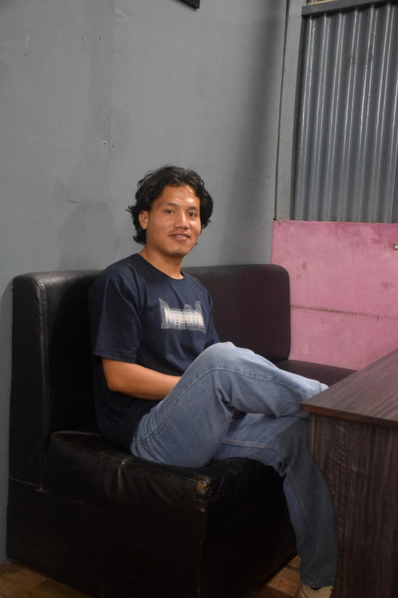

Hi, I'm Nishant Tamang. I combine rigorous geomatics engineering practices with modern web technologies to design spatial dashboards, analyze subnational census datasets, and unlock insights using geographic data models.

A log of my academic projects, remote sensing research, and GIS developer experiences.
Explore subnational demographics in Nepal. This Leaflet-based Web GIS application dynamically maps census data across the country's 7 provinces. Hover over any province to see detailed population profiles.
Assembling administrative map layers...
Browsers block AJAX requests on local files (file://) for security. Please run a local web server, or click the button below to load the map using a fallback inline dataset.